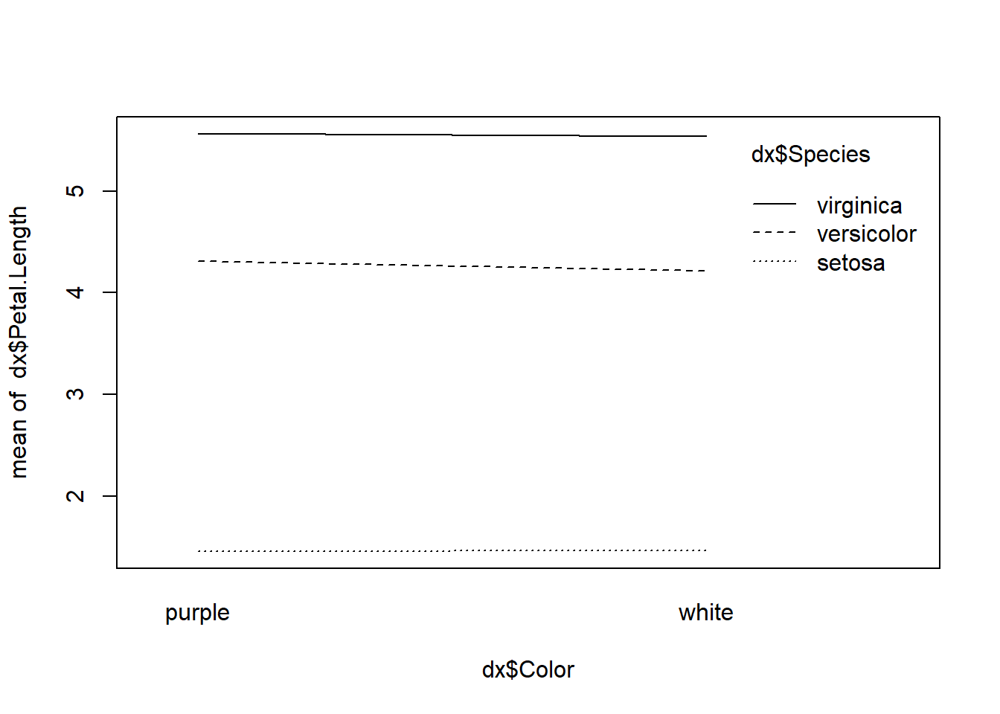
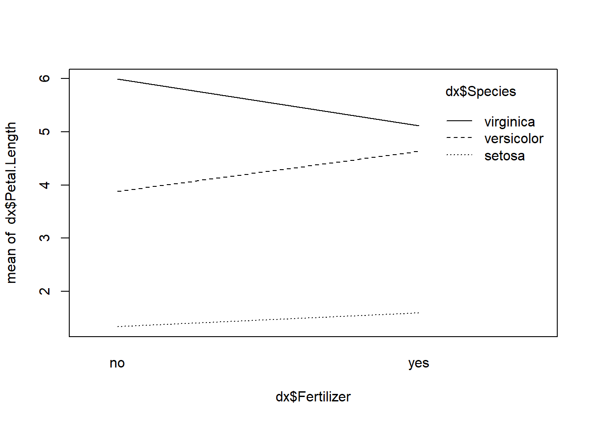
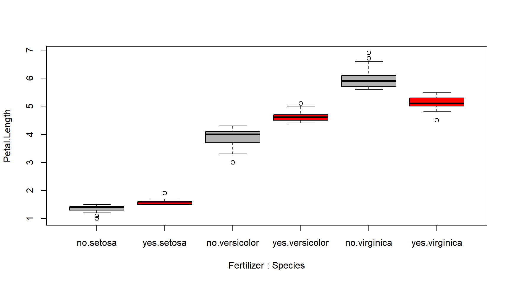
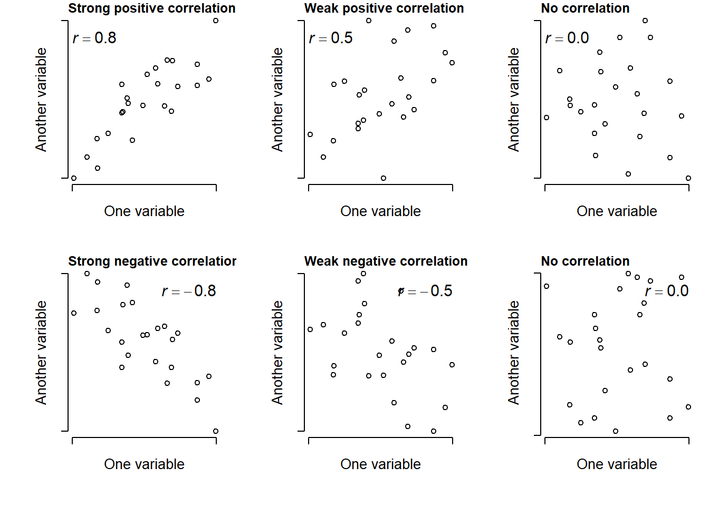
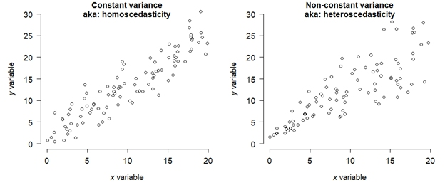

Module 9 Basic statistics with R
In this module, we will review some basic statistical methods that most people learn in an Introductory Statistics or Biostatistics course. These tests are classics for a reason: they are powerful and collectively can be applied to many situations. However, as we shall see, these tests have a lot of assumptions and conditions that must be met in order to use them…and those conditions are not always easy to meet.
First, we’ll review the basics of how biological data are stored, then what a frequentist statistical test really is–including what P-values are and what they represent. Then we’ll review the classic frequentist tests in 4 categories:
Tests for differences in mean or location.
Tests for patterns in continuous data.
Tests for proportions and contingency (aka: tests for independence)
Classification.
Most biological problems fall into one of those four categories. Most introductory statistical courses cover the first 3 categories pretty well. Classification can be more complicated. When your problem does not, you’ll need to move on to one of the more advanced analyses we’ll cover later this semester.
9.1 Datasets and variables
When biologists collect data in an experiment, they create a dataset. This often takes the form of a table. Different software packages may refer to this as a spreadsheet, data frame, or matrix. Whatever you call them, a typical biological dataset usually looks like this:
Each row of the dataset is called an observation, or sometimes record. Each entity about which data is collected corresponds to 1 row of the dataset. For example, the dataset for a study of limb morphology in bats might have one row for each species.
- If someone asks what your “sample size” or “number of samples” is, the answer is likely the number of rows in your dataset (minus any blanks or missing values, of course).
Each column is called a variable, or sometimes a feature. Each variable contains 1 and only 1 kind of value. For example, a cell entry like “12.2 cm” is not legitimate, because it contains 2 kinds of values: a measurement (12.2) and a unit (cm). If the units need to be recorded, they should be in a separate column.
In R, datasets are almost always stored as objects called data frames. Data frames have rows and columns, and function a bit like a spreadsheet. Unlike a matrix, rows and columns are not interchangeable: a row of a data frame is a data frame with 1 row, while a column is really a vector (i.e., not a data frame).
Variables in a dataset come in three varieties. Understanding these is crucial to being able to think about the structure of your dataset and what kind of statistical test you need.
Response: outcomes that you want to explain or predict using other variables. AKA: dependent variables.
Predictor: variables that are used to model, or predict, response variables. AKA: independent or explanatory variables.
Key: values which are used to relate 2 or more datasets to each other. Fundamental in database design.
In this course, every analysis will have have at least 1 response variable and at least 1 predictor variable. Understanding the nature of your response variable and predictor variable(s) is key to choosing an appropriate analysis.
Variables can be either categorical or numeric:
| Type | Definition | Examples |
|---|---|---|
| C ategorical | Defines group m embership; can be coded as numbers ( integers), dummy variables, or text | “Control” vs. ” treated” “group 1” vs. “group 2” ” herbivore” vs. ” carnivore” |
| Numeric | Numbers (don’t overthink it!) | 1, 2, \(\pi\), 3.33, etc. |
When categorical variables are used as explanatory variables, they are called factors. Each unique value of a factor is called a level. For example, the factor “treatment” might have two levels, “control” and “exposed”. Or, the factor “diet” might have 3 levels: “herbivore”, “omnivore”, and “carnivore”.
Numeric variables can be continuous or discrete:
| Type | D efinition | Examples |
|---|---|---|
| C ontinuous | Can take on any real value within its domain, limited only by the precision of m e asurement | 1.11, 3, 4.82, \(\pi\), 9.999, etc. |
| Discrete | Can take on only integer values. Often r estricted to be n o n -negative (\(\geq0\)) or even strictly positive (>0). | 1, 2, 16, 42, etc. |
Some kinds of numeric variables need to be treated with care, because they have a particular domain and set of possible values. Most of these should probably not be modeled (i.e., treated as the response variable) using the basic statistical methods in this module. We’ll explore models in Module 10 for these variables.
Type of data: counts
Domain:
How to model:
Type of data: counts
Domain: non-negative integers
How to model: GLM or GLMM
Type of data: proportions
Domain: The closed interval [0,1], or possibly the open interval (0, 1) depending on the context.
How to model: GLM or GLMM; maybe a \(\chi^2\) tests or other test for independence.
Type of data: measurements (mass, length, volume, etc.)
Domain: Positive real numbers. These values cannot be negative!
How to model: Log-transform before analysis, or use GLM(M) with a log link function.
Type of data: Censored or truncated data.
Domain: Usually real numbers with a well-defined upper or lower limit, usually related to limits of detection or measurement.
How to model: Special methods such as tobit models (beyond the scope of this course…for now).
Type of data: Binomial or multinomial outcomes.
Domain: Outcome is one of a set of possibel outcomes (e.g., 0 or 1; a, b, or c, etc.). Although usually coded as numbers, these cannot be treated as numbers.
How to model: GLM or GLMM; CART, maybe other methods outside the scope of this course.
9.2 Frequentist statistics
Classical statistics, such as those taught in introductory statistics or biostatistics courses, are also frequentist statistics. This means that these methods rely on probability distributions (also called frequency distributions) of derived values called test statistics, and make assumptions about the applicability of those test statistics. These assumptions can be quite strong, and possibly restrictive, so you need to be very careful when using frequentist tests.
If your data do not meet the assumptions of a test, the test will be invalid.
The basic procedure of any frequentist test is as follows:
- Collect data.
- Calculate a summary of the effect size (aka: quantity of interest, such as difference in means between groups), which scales the effect size by other considerations such as sample size or variability. This summary is the test statistic.
- Compare the test statistic to the distribution of test statistics expected given the sample size and assuming a true effect size of 0. The probability of a test statistic that extreme given a true effect size of 0 is the P-value.
- If the value of the test statistic is rare enough (i.e., the P-value is small enough), assume that it was not that large due to chance alone, and reject the null hypothesis of no effect. I.e., declare a “significant” test result.
Frequentist tests vary wildly in their assumptions, the nature of their test statistics, and so on, but the procedure above describes most of them.
9.2.1 P-values and NHST
When scientists design experiments, they are testing one or more hypotheses: proposed explanations for a phenomenon. Contrary to popular belief, the statistical analysis of experimental results usually does not test a researcher’s hypotheses directly. Instead, statistical analysis of experimental results focuses on comparing experimental results to the results that might have occurred if there was no effect of the factor under investigation. This paradigm is called null hypothesis significance testing (NHST) and, for better or worse, is the bedrock of modern scientific inference.
In other words, traditional statistics sets up the following:
Null hypothesis (H0): default assumption that some effect (or quantity, or relationship, etc.) is zero and does not affect the experimental results
Alternative hypothesis (Ha or H1): assumption that the null hypothesis is false. Usually this is the researcher’s scientific hypothesis, or proposed explanation for a phenomenon.
In (slightly) more concrete terms, if researchers want to test the hypothesis that some factor X has an effect on measurement Y, then they would run an experiment comparing observations of Y across different values of X. They would then have the following set up:
Null hypothesis: Factor X does not affect Y.
Alternative hypothesis: Factor X affects Y.
Notice that alternative hypothesis is the logical negation of the null hypothesis, not a statement about another variable (e.g., “Factor Z affects Y”). This is an easy mistake to make and one of the weaknesses of NHST: the word “hypothesis” in the phrase “null hypothesis” is not being used in the sense that scientists usually use it. This unfortunate choice of vocabulary is responsible for generations of confusion among researchers and statistics learners.
In order to test an “alternative hypothesis”, what researchers usually do is estimate how likely the data would be if the null hypothesis were true. If a pattern seen in the data is highly unlikely, this is taken as evidence that the null hypothesis should be rejected in favor of the alternative hypothesis. This is not the same as “accepting” or “proving” the alternative hypothesis. Instead, we “reject” the null hypothesis. In the other case, we do not “accept” the null hypothesis, we “fail to reject” it.
The null hypothesis is usually translated to a prediction like one of the following:
The mean of Y is the same for all levels of X.
The mean of Y does not differ between observations exposed to X and observations not exposed to X.
Outcome Y is equally likely to occur when X occurs as it is when X does not occur.
Rank order of Y values does not differ between levels of X.
All of these predictions have something in common: Y is independent of X. That’s what the null hypothesis means. To test the predictions of the null hypothesis, we need a way to calculate what the data might have looked like if the null hypothesis was correct. Once we calculate that, we can compare the data to those calculations to see how “unlikely” the actual data were. Data that are sufficiently unlikely under the assumption that the null hypothesis is correct—a “significant difference”—are a kind of evidence that the null hypothesis is false.
Most classical statistical tests calculate a summary statistic called a P-value to estimate how likely some observed pattern in the data would be if the null hypothesis was true. This is the value that researchers often use to make inferences about their data. The P-value depends on many factors, as we’ll see, but the most important are:
The magnitude of some test statistic: a summary of the pattern of interest.
Sample size, usually expressed as degrees of freedom (DF)
The variability of the data
The consistency, sign, and magnitude of the observed pattern
When I teach statistics to biology majors, I try to avoid the terms “null hypothesis” and “alternative hypothesis” at first, because most of my students find them confusing. Instead, I instruct students to ask two questions about a hypothesis:
What should we observe if the hypothesis is not true?
What should we observe if the hypothesis is true?
In order to be scientific hypothesis, both of those questions have to be answerable. Otherwise, we have no way of distinguishing between a situation where a hypothesis is supported, or a situation where it is not, because experimental results could always be due to random chance (even if the probability of that is very small). All we can really do is estimate how likely it is that random chance drove the outcome.
When interpreting P-values, there are 3 extremely important things to remember:
When P < 0.05, the hypothesis is “supported”. When P ≥ 0.05, the hypothesis is “not supported”. Notice that the terms are “supported” or “not supported”. Words like “proven” or “disproven” are not appropriate when discussing P-values.
The P-value is not the probability that your hypothesis is false, or the probability that a hypothesis is true. It is a heuristic for assessing how well data support or do not support a hypothesis.
P-values depend on many factors, including sample size, effect size, variation in the data, and how well the data fit the assumptions of the statistical test used to calculate the P-value. This means that P-values should not be taken at face value and never used as the sole criterion by which a hypothesis is accepted or rejected.
When a statistical test returns a P-value <0.05, we say that the results are “statistically significant”. For example, a “statistically significant difference” in means between two groups, or a “statistically significant correlation” between two numeric variables.
9.3 What kind of test do you need?
If you’re not sure what kind of test you need, start here! Note that this key is meant to guide you to one of the classical tests in this module. For a more complete guide to choosing your analysis, refer to Module 8.
I want to…
Compare a single set of values to a single value: Go to 2.
Compare two or more groups to see if their values are different: Go to 3.
Compare two sets of continuous values (with or without a grouping variable) to see if they are related: Go to 4.
Compare the proportions of observations that fall into different groups or categories. I.e., Analyze a contingency table: Go to
Comparing a set of values to a single value. I want to…
Test whether the mean is equal to some value: one-sample, 2-tailed t-test. See here.
Test whether the mean is greater than some value: one-sample, 1-tailed t-test, alternative = “greater”. See here.
Test whether the mean is less than some value: one-sample, 1-tailed t-test, alternative = “less”. See here.
Test whether the mean of a set of values is equal to 0. You can’t actually do this, but you can get close with an equivalence test. See here.
Comparing the means of 2 or more groups. How many groups do you have?.
2 groups. Go to 6.
3 or more groups. Go to 7.
Compare 2 sets of continuous values to see if they are related. Pick the choice that best matches your situation:
Test whether two variables are linearly correlated: linear correlation. See here.
Test whether two variables are nonlinearly correlated, or assumptions of linear correlation not met: nonlinear correlation (aka: rank correlation). See here.
Use one continuous variable to predict another, using a linear function: linear regression. See here.
Use one continuous variable and a factor to predict a continuous variable: analysis of covariance (ANCOVA). See here.
Compare proportions of observations across groups; i.e., analyze a contingency table. Pick the choice that best matches your situation.
Sample size is small: Fisher’s exact test. See here.
Sample size is large: Chi-squared (\(\chi^2\)) test. See here.
Sample size is really large: G-test. See here.
I want to predict group membership of observations, not test for independence: Logistic regression, multinomial regression, classification trees, or something else more exotic. Not covered in this module.
Compare the means of 2 groups. Pick the choice that best matches your situation:
Compare the means of 2 groups, assumptions of t-test met: two-sample, 2-tailed t-test. See here. This is what most people mean if they say “t-test” without any qualification.
Test whether the mean difference in paired observations is 0: paired t-test. See here.
Test whether values in one group are consistently greater or smaller than in the other group: Wilcoxon test (AKA: Mann-Whitney U test). See here.
(Uncommon). Test whether difference in means between 2 groups is greater than some value: two-sample, 1-tailed t-test, alternative = “greater”. See here.
(Uncommon). Test whether difference in means between 2 groups is less than some value: two-sample, 1-tailed t-test, alternative = “less”. See here.
Compare the means of 3 or more groups.
9.4 Tests for differences in mean or location
9.4.1 Tests for 1 group
When all of the values come from the same set of observations, we can ask questions such as:
Is the mean in this group equal to, or different from, some arbitrary value?
Is the mean in this group greater than, or not greater than, some arbitrary value?
These are the domain of one-sample tests. The most important is the one-sample t-test, which comes in two varieties: one-tailed and two-tailed. All one-sample tests compare the mean of a set of values to some quantity (hypothetical mean) of interest, called μ (the Greek letter “mu”). In a one-tailed test, the null hypothesis is that the underlying population mean is either ≤ or ≥ μ. In a two-tailed test, the null hypothesis is that the population mean is = μ.
A note on symbology: sample vs. population parameters
In statistics, we analyze samples (randomly-selected subsets of observed entities) to make inferences about populations (the hypothetical set of all possible entities which could be included in a sample). For example, if you wanted to know how the population of a nation of 100 million citizens felt about some political issue, it would be time-consuming and expensive to ask each citizen what they thought. Instead, you would sample a randomly selected set of, say, 1000 citizens and then assume that those results reflected the opinion of the entire citizenry. For this assumption to work, your sample must be both random and representative of the entire population.
Similarly, in science we cannot collect a infinite amount of data, or measure every squirrel in the forest, or any other type of exhaustive and comprehensive data collection. We instead take representative samples of all the possible samples–i.e., the population–and rely on good practices in experimental design to enable us to assume that our sample represents the population.
The reason I bring this up here is that we need to keep in mind the difference between sample statistics and population statistics. Sample statistics are calculated from your data. Population statistics are inferred from your data using statistical models. This is why statistical tests are commonly referred to as inferential statistics, and why simple calculations from data are referred to as descriptive statistics.
The most common descriptive statistics are shown below:
| Parameter | Sample | Population |
|---|---|---|
| Mean | \(\bar{x}\) | \(\mu\) |
| Variance | \(s^{2}\) | \(\sigma^{2}\) |
| Standard deviation | \(s\) | \(\sigma\) |
This means that some quantities that look inferential, such as correlation coefficients, are actually descriptive. So, the old saw that “correlation does not equal causation” is true in a literal mathematical sense.
9.4.1.1 One-sample t-test (one-tailed)
In a one-tailed one-sample test, we are interested in whether the underlying population mean (\(\mu\)) of a set of values is not equal to some value of interest…either at most some value, or at least some value.
Question: Is the mean value less than OR greater than some value \(x\)?
Null hypothesis: True mean is \(=x\).
Alternative hypothesis: True mean is \(<x\) or true mean is \(>x\).
Example use case:Fred needs to check whether the mean measurement error across his 12 technicians is less than 0.5 mm.
Here is an example where we simulate some data in R and run a one-tailed one-sample t-test.
# simulate some values with nominal mean 5 and sd 3
set.seed(123)
a <- rnorm(20, 5, 3)
# 1 sample 1 tailed t-test
# Example 1: Is the underlying mean <= 0?
t.test(a, alternative="greater")##
## One Sample t-test
##
## data: a
## t = 8.3142, df = 19, p-value = 4.707e-08
## alternative hypothesis: true mean is greater than 0
## 95 percent confidence interval:
## 4.29664 Inf
## sample estimates:
## mean of x
## 5.424871##
## One Sample t-test
##
## data: a
## t = 2.1838, df = 19, p-value = 0.02086
## alternative hypothesis: true mean is greater than 4
## 95 percent confidence interval:
## 4.29664 Inf
## sample estimates:
## mean of x
## 5.424871Interpretation: In the example above, the researcher can reject the null hypothesis that the true mean is \(\leq4\), and conclude that the true mean is \(>4\).
##
## One Sample t-test
##
## data: a
## t = -0.11514, df = 19, p-value = 0.4548
## alternative hypothesis: true mean is less than 5.5
## 95 percent confidence interval:
## -Inf 6.553102
## sample estimates:
## mean of x
## 5.424871Interpretation: In example 3, the researcher cannot reject the null
hypothesis that \(\mu\geq5.5\). This makes sense, because the true mean is
about \(5.4\pm2.9\) (verify with mean(a);sd(a)).
9.4.1.2 One-sample t-test (two-tailed)
In a two-tailed test, we are interested in whether the underlying population mean of a set of values is equal to some value of interest.
Question: Is the underlying true mean equal to, or different from, some value \(\mu\)?
Null hypothesis: True mean \(=\mu\).
Alternative hypothesis: True mean \(\neq\mu\)
Example use case: Wilma needs to test whether the mean pH of her prepared stock solution is equal to, or different from, the target pH of 7.7.
Here is an example where we simulate some data and conduct a one-sample, two-tailed t-test.
# simulate data
set.seed(123)
a <- rnorm(20, 3, 1)
# 1 sample 2-tailed t-test:
## Example 1: mu = 0 (default)
t.test(a)##
## One Sample t-test
##
## data: a
## t = 14.445, df = 19, p-value = 1.067e-11
## alternative hypothesis: true mean is not equal to 0
## 95 percent confidence interval:
## 2.686402 3.596845
## sample estimates:
## mean of x
## 3.141624Interpretation: In the example above, the researcher can reject the null that the true mean = 0, and conclude that the true mean is significantly different from 0.
Here’s another example with a different dataset and test.
# simulate data
set.seed(123)
a <- rnorm(20, 3, 1)
# 1 sample 2-tailed t-test:
## Example 2: mu = 5
t.test(a, mu=5)##
## One Sample t-test
##
## data: a
## t = -8.5445, df = 19, p-value = 6.218e-08
## alternative hypothesis: true mean is not equal to 5
## 95 percent confidence interval:
## 2.686402 3.596845
## sample estimates:
## mean of x
## 3.141624Interpretation: The researcher can reject the null hypothesis that the mean = 5, and conclude that the true mean is not 5. Note that this includes both <5 and >5 as possibilities, but the direction is obvious from the sample mean.
9.4.2 Tests comparing two groups
9.4.2.1 Student’s t-test (Welch)
When most people say “t-test”, what they really mean is a two-sample, two-tailed t-test that tests for a difference in means between two groups. The original version was introduced as the “Student’s t-test” by William Sealy Gosset in 190864; modern software uses a modified version called the Welch t-test (or sometimes the “Welch-Satterthwaite t-test”, but this is not quite correct). The newer version is better at accounting for non-normality and unequal variances.
Question: Do two groups have the same underlying population mean?
Null hypothesis: The true difference in means = 0. I.e., \(\mu_1=\mu_2\).
Alternative hypothesis: True difference in means is \(\neq0\). I.e., \(\mu_1\neq\mu_2\).
Example use case: Barney needs to test whether tomato plants treated with a new pesticide have a different yield (g tomato / plant) than plants in the untreated control group.
Below is an example where we simulate some data and run a two-sample, two-tailed test to compare the means of two groups.
# simulate data
set.seed(42)
a <- rnorm(100, 5, 2)
b <- rnorm(100, 3, 2)
# example 1: difference in means
t.test(a,b)##
## Welch Two Sample t-test
##
## data: a and b
## t = 8.1211, df = 194.18, p-value = 5.241e-14
## alternative hypothesis: true difference in means is not equal to 0
## 95 percent confidence interval:
## 1.696004 2.783990
## sample estimates:
## mean of x mean of y
## 5.065030 2.825033Interpretation: The researcher should conclude that there is a statistically significant difference between the means of groups a and b. In a manuscript, you should report the test statistic, the DF, and the p-value. E.g., “There was a significant difference in means between group a and group b (\(t=8.121\), 194.18 d.f., \(p<0.001\)).” Notice that values are rounded to 2 or 3 decimal places, which is usually enough for biology. This is especially true for the p-value, which can be approximated by R down to infinitesimally small values. I always round those to 0.001 or 0.0001.
A t-test can also be performed using the formula interface, which is an R programming construct for specifying a response variable and its predictors.
Syntax note: Formula syntax has the response variable on the left,
then a ~, then the predictor or predictors. For predictors, a + b
means an additive model; while a * b specifies an interaction. For a
t-test, there can be only 1 predictor. If you want to test >1
predictor at a time, you need to use ANOVA instead.
Here are some common formula examples:
Formula: y ~ x
Meaning: y is a function of x.
Formula: y ~ x1 + x2
Meaning: y is a function of x1 and x2, and the effects of x1
and x2 are orthogonal (i.e., independent of each other).
Formula: y ~ x1 * x2
Meaning: y is a function of x1 and x2, and the effects of x1
and x2 interact. This means that one variable alters the effect of
another variable.
The formula interface is used in several contexts in R, including plotting, modeling, and aggregating.
# pull some data from example dataset iris
# i.e., make a new data frame with only 2 groups
dx <- iris[which(iris$Species %in% c("setosa", "versicolor")),]
# perform the test.
t.test(Petal.Length~Species, data=dx)##
## Welch Two Sample t-test
##
## data: Petal.Length by Species
## t = -39.493, df = 62.14, p-value < 2.2e-16
## alternative hypothesis: true difference in means between group setosa and group versicolor is not equal to 0
## 95 percent confidence interval:
## -2.939618 -2.656382
## sample estimates:
## mean in group setosa mean in group versicolor
## 1.462 4.260Interpretation: The researcher should conclude that there is a statistically significant difference between the mean petal length of Iris setosa and Iris versicolor.
9.4.2.2 2-sample, 1-tailed t-test
Question: Is the true difference in means between 2 groups greater than, or less than, some target value \(\mu\)?
Null hypothesis: The true difference in means between 2 groups is \(\mu\). I.e., \(\mu_1-\mu_2=\mu\).
Alternative hypothesis: The true difference in means between 2 groups is either greater than \(>\mu\) or \(<\mu\). I.e., either \(\mu_1-\mu_2>\mu\) or \(\mu_1-\mu_2<\mu\).
Example use case: Betty needs to compare two stock solutions and check that their pH differs by no more than 0.2.
The 2-sample, 1-tailed t-test that can be used in several ways:
- Test whether the mean in one group is greater or less than the mean in another group.
- Test whether the the mean in one group is greater or less than the mean in another group, and that the difference is at least some specified value.
For example, if you know that the mean of group 1 must be less than the mean in group 2, and will not even consider that the mean of group 2 is less than that of group 1, then you could run a 2-sample 1-tailed test.
# simulate data
set.seed(789)
x1 <- rnorm(20, 10, 1)
x2 <- rnorm(20, 12, 1)
# is mean(x1) > mean(x2)?
t.test(x1, x2, alternative="greater")##
## Welch Two Sample t-test
##
## data: x1 and x2
## t = -8.8728, df = 37.99, p-value = 1
## alternative hypothesis: true difference in means is greater than 0
## 95 percent confidence interval:
## -2.402592 Inf
## sample estimates:
## mean of x mean of y
## 9.689982 11.708940##
## Welch Two Sample t-test
##
## data: x1 and x2
## t = -8.8728, df = 37.99, p-value = 4.259e-11
## alternative hypothesis: true difference in means is less than 0
## 95 percent confidence interval:
## -Inf -1.635323
## sample estimates:
## mean of x mean of y
## 9.689982 11.708940##
## Welch Two Sample t-test
##
## data: x1 and x2
## t = -13.267, df = 37.99, p-value = 1
## alternative hypothesis: true difference in means is greater than 1
## 95 percent confidence interval:
## -2.402592 Inf
## sample estimates:
## mean of x mean of y
## 9.689982 11.708940##
## Welch Two Sample t-test
##
## data: x1 and x2
## t = -13.267, df = 37.99, p-value = 3.867e-16
## alternative hypothesis: true difference in means is less than 1
## 95 percent confidence interval:
## -Inf -1.635323
## sample estimates:
## mean of x mean of y
## 9.689982 11.708940an uncommon variant used to test whether two groups have a difference in means that is less than or greater than some specified value. For example, if you produce two batches of bacteria by inoculation, incubation, and then serial dilution, you may want to confirm that the difference in cell count between them is less than some acceptable value. You could use a 2-sample, 1-tailed test with the “alternative” hypothesis being that the difference is “greater” than your benchmark.
set.seed(789)
x1 <- rnorm(30, 5, 2)
x2 <- rnorm(30, 5.5, 2)
# is the true difference in means <1?
t.test(x1, x2, alternative="greater")##
## Welch Two Sample t-test
##
## data: x1 and x2
## t = -2.6676, df = 50.08, p-value = 0.9949
## alternative hypothesis: true difference in means is greater than 0
## 95 percent confidence interval:
## -2.048126 Inf
## sample estimates:
## mean of x mean of y
## 4.438104 5.6960019.4.2.3 Paired t-test
Question: Is the mean of the differences of paired observations = 0, or different from 0?
Null hypothesis: Mean of pairwise differences = 0.
Alternative hypothesis: Mean of pairwise differences \(\neq0\).
Example use case: Pebbles needs to test for a mean change in the body mass of individual mice before and after a feeding trial. Each mouse is weighed both before and after the trial.
Many biological experiments involved paired samples, where a single unit or entity was measured twice. For example, a single mouse might be weighed before and after a feeding trial. In a paired t-test, we test whether or not the mean of differences is 0. This is subtly different than the test for differences in means evaluated in a two-sample test. Consequently, a paired t-test is tantamount to a one-sample test on the pairwise differences. Compare the null hypotheses tested by the two-sample t-test and paired t-test below:
Two-sample t-test: \(\frac{\sum_{i=1}^{n_1}x_{1,i}}{n_1}=\frac{\sum_{i=1}^{n_2}x_{2,i}}{n_2}\)
Paired t-test: \(\frac{\sum_{i=1}^{n}{x_{1,i}-x_{2,i}}}{n}=0\)
Let’s simulate some data, conduct a paired t-test, and convince ourselves that the paired t-test is equivalent to a one-sample test on pairwise differences.
# Example paired t-test in R
# simulate data
set.seed(42)
a <- rnorm(100, 5, 2)
# add pair-wise differences
b <- a + rnorm(100, 2, 0.2)Interpretation: The researcher should conclude that the mean difference for each subject was significantly different from 0, at -1.98 with a 95% CI of [-2.02, -1.95].
Note that the paired t-test gives essentially the same result as conducting a one-sample test on the pair-wise differences.
##
## One Sample t-test
##
## data: dif
## t = 109.63, df = 99, p-value < 2.2e-16
## alternative hypothesis: true mean is not equal to 0
## 95 percent confidence interval:
## 1.946622 2.018385
## sample estimates:
## mean of x
## 1.9825039.4.2.4 Equivalence testing
It is not possible to demonstrate statistically that a difference in means is truly 0. With a 1-sample, 2-tailed test the best you can do is “fail to reject” the null hypothesis that the mean is 0. However, we can show that the difference is arbitrarily close to 0. This approach is called equivalence testing, and one method is the two one-sided tests (TOST) method. The method works like this:
Here is a worked TOST equivalence test example in R:
## [1] 1# note that total tolerance range is 1, so
# amount for both one-sided tests is 0.5
D <- 0.5
# test 1: is difference >-D?
t.test(a, b, alternative = "greater", mu=-D)##
## Welch Two Sample t-test
##
## data: a and b
## t = 4.4956, df = 194.18, p-value = 5.955e-06
## alternative hypothesis: true difference in means is greater than -0.5
## 95 percent confidence interval:
## -0.1079329 Inf
## sample estimates:
## mean of x mean of y
## 5.032515 4.912516##
## Welch Two Sample t-test
##
## data: a and b
## t = -2.7554, df = 194.18, p-value = 0.00321
## alternative hypothesis: true difference in means is less than 0.5
## 95 percent confidence interval:
## -Inf 0.34793
## sample estimates:
## mean of x mean of y
## 5.032515 4.912516Interpretation: Test 1 showed that the difference in means is \(>-0.5\). Test 2 showed that the difference in means is \(<0.5\). So, the difference in means is in the interval (-0.5, 0.5), which means the difference in means is at most 0.5 in either direction.
9.4.2.5 Wilcoxon rank sum test (aka: Mann-Whitney U test)
Question: Are values in one group consistently greater than or less than those in another group? OR: Is the median rank in one group different from that in another group?
Null hypothesis: For randomly selected values \(x\) and \(y\) from two groups, \(p\left(x>y\right)=p\left(y>x\right)\).
Alternative hypothesis: For randomly selected values X and Y from two groups, \(p\left(x>y\right)\neq p\left(y>x\right)\).
Example use case: Homer is interested in whether plots where invasive plants have been removed have more squirrels than plots where invasive plants are not removed, but does not want to model the actual number of squirrels.
The Mann-Whitney U test, also known as the Wilcoxon test, is a nonparametric alternative to the two-sample t-test. Nonparametric means that the test does not make restrictive assumptions about the distribution of the data or a test statistic. Nonparametric tests are often based on the ranks of the data: the smallest value is rank 1, the next smallest is rank 2, and so on. Because of this, nonparametric tests allow you make statements about how consistent a pattern is, rather than about the actual values.
This test has two common use cases:
The researcher is only interested in whether values in one group are consistently larger than those in another group.
The researcher needs to perform a t-test, but the data do not meet the assumptions of the t-test.
The syntax for the Wilcoxon test is fairly similar to that of a t-test.
Example Wilcoxon test in R:
# simulate some data:
set.seed(123)
a <- runif(20, 1, 6)
b <- runif(20, 4, 9)
# run the test
wilcox.test(a,b)##
## Wilcoxon rank sum exact test
##
## data: a and b
## W = 35, p-value = 1.126e-06
## alternative hypothesis: true location shift is not equal to 0Here is the same kind of test, but using the formula interface. You can use the formula interface for t-tests as well.
# pull some data from example dataset iris
# i.e., make a new data frame with only 2 groups
use.species <- c("versicolor", "virginica")
dx <- iris[which(iris$Species %in% use.species),]
dx$Species <- factor(dx$Species, levels=use.species)
# perform the test.
wilcox.test(Petal.Length~Species, data=dx)##
## Wilcoxon rank sum test with continuity correction
##
## data: Petal.Length by Species
## W = 44.5, p-value < 2.2e-16
## alternative hypothesis: true location shift is not equal to 0Interpretation: The researcher can say that values in one group are consistently greater than values in the other group. Which way that goes should be obvious from looking at the sample medians or a boxplot.
# follow up the test with a boxplot
# note that the formula interface is used here as well!
boxplot(Petal.Length~Species, data=dx)When sample sizes or effect sizes are large, the Wilcoxon test and the t-test will often give the same answers in terms of significance vs. nonsignificance.
Because the t-test tests for a difference in means, and the Wilcoxon is its rank-based alternative, some people think that the Wilcoxon test is a test for a difference in medians…but this is not correct. It’s more accurate to say that the Wilcoxon test tests for a median difference.
9.4.3 Aside: what’s with all these t-tests?
If it’s not obvious by now, the t-test was a very important development in modern statistics. This is because its test statistic, t, is very flexible and inclusive. It starts with the quantity of interest–a difference between a group mean, and either another group mean and a target value–and scales it by sample size and uncertainty. Thus, there is a t-test for many situations. A summary is below:
| Type | Use |
|---|---|
| One-sample t-test, one-tailed | Tests whether population mean of a single set of values is less than, or greater than, a specified values \(\mu_{0}\). Only appropriate when differences in one direction only are of interest. |
| One-sample t-test, two-tailed | Tests whether population mean is equal to some specified value \(\mu_{0}\) (null hypothesis) or not (alternative hypothesis). |
| Two-sample t-test, one-tailed | Tests whether population mean of a one group (\(\mu_{1}\)) is less than, or greater than, the mean of another group (\(\mu_{2}\)). Only appropriate when differences in one direction only are of interest. |
| Two-sample t-test, two-tailed | Tests whether the means in two groups (\(\mu_{1}\) and \(\mu_{2}\)) are equal. Can also be thought of testing whether difference in means is equal to 0. Both equal variance (original) and unequal variance (Welch-Satterthwaite) versions exist…biologists should use the unequal variance version. This is what R does by default. |
| Paired t-test, one-tailed | Tests whether the mean of differences between paired samples is less than, or greater than, some specified mean difference \(D_{0}\). Only appropriate when differences in one direction only are of interest. |
| Paired t-test, one-tailed | Tests whether the mean of differences between paired samples is equal to 0. |
The number of “samples” in a t-test refers to how many sets of observations are being compared. There can be either 1 sample (all observations compared to some value) or 2 samples (2 sets of observations compared to each other).
The number of “tails” refers to how sides (left (negative) and/or right (positive)) are of interest in the test statistic distribution. In a two-tailed test, or two-sided test, an extreme test statistic could fall in either the right or the left tail of the distribution. The figure below shows the range of t values which would be declared significant for each kind of test. Notice that for a one-tailed test, the significance region extends closer to the center, because its area must be equal to the same \(\alpha\) as a two-tailed test.
The t-test is usually one of the first methods taught because its use cases are simple, and its test statistic is pretty easy to understand. Consider the original t statistic introduced to the English statistics literature by Gosset and popularized as “Student’s t” by Fisher:
\[ t=\frac{\bar{x_1}-\bar{x_2}}{\sqrt{\frac{s_{x_1}^2+s_{x_2}^2}{2}}\sqrt{\frac{2}{n}}} \]
The numerator is the quantity of interest: the difference in sample means. It should make sense that the larger the difference in sample means, the greater the probability that the difference will be statistically significant. However, considering only the sample means \(\bar{x_1}\) and \(\bar{x_2}\) is not enough. We also need to account for variation within each sample, and for the total sample size. Variance should decrease t, while sample size should increase it. Both terms are put in the denominator so that the difference in means is relative to them. Notice that in the denominator, the variances \(s_{x_1}^1\) and \(s_{x_2}^1\) are in a numerator. Thus, increasing them will decrease t. On the other hand, the sample size n is in a numerator in the denominator (which is tantamount to being in the overall numerator). Thus, increasing sample size will increase t.
But as elegant as Student’s t is, it has some drawbacks. It can produce biased estimates and p-values when the two groups have unqual sample sizes, or unequal variances. For these reasons, a more modern version of the t statistic was developed by Welch in the 1940s. This is sometimes called the “Welch’s t-test”, or less precisely the “Welch-Satterthwaite t-test”. Satterthwaite’s contribution was not to the t statistic, but rather an equation to better calculate the degrees of freedom to use for the test65.
\[ t=\frac{\bar{x_1}-\bar{x_2}}{\sqrt{\frac{s_1}{\sqrt{n_1}}+\frac{s_2}{\sqrt{n2}}}} \] This newer version has the same numerator, but instead of pooling the variances and sample sizes, keeps them separate. This allows for more flexibility when dealing with unequal sample sizes or (mildly) heteroscedastic data.
9.4.4 Comparing 3 or more groups
9.4.4.1 Analysis of variance (ANOVA)
Question: Do the means differ between groups (with number of groups \(\geq2\).
Null hypothesis: All group means are equal.
Alternative hypothesis: At least one group mean is different from the others.
Example use case: Marge needs to test whether cucumber mass is greater in plants grown in potting mix, sandy soil, or clayey soil.
Analysis of variance (ANOVA) is a special case of the linear model. When people say “ANOVA” they usually mean the specific linear model that compares the means of 3 or more groups. In this way it can be thought of as an extension of the t-test from 2 groups to >2, but this is incorrect from a frequentist perspective because of how differently the t-test and ANOVA arrive at a P-value66. It’s better to think of the frequentist t-test and ANOVA as cousins. Frequentist ANOVA assesses statistical significance using the statistic F, which is related to the amount of variance associated with different sources of variance, relative to the number of degrees of freedom. This is different from t, which is a difference in means scaled by variances and sample sizes, F. Either way, t and F (and all test statistics) are just contrivances to obtain a P-value.
The nature of the F statistic belies the other meaning of ANOVA: the partitioning of variation into its different sources. In other words, what proportion of variation in the Y variable does each factor explain? How much variation is due to random chance (i.e., residual variation)? ANOVA in this sense can be applied to many models, including all linear models.
From the state-space linear modelling perspective (or Bayesian perspective), the differences between the t-test and ANOVA are trivial. Consider this model:
\[ y_i\sim Normal\left(\mu_{x_i},\ \sigma_{res.}\right) \]
If \(\mu_{x_i}\) is the mean for the group defined by \(x_i\), then what is this model saying? It’s saying that the value of y for observation i is drawn from a normal distribution with a mean that depends on group of observation i, and some residual variation . This single equation covers a lot of situations:
If the number of groups is 1, then this is a one-sample t-test
If the number of groups is 2, then this is a two-sample t-test.
If the number of groups is ≥3, then this is a one-way ANOVA with 3 levels to its 1 factor (“way”).
- For example, if the number of groups is 4, then it could be a two-way ANOVA, with two factors with 2 levels each.
If the number of groups is 1, but the values represented paired differences, then this is a paired t-test.
In a typical frequentist ANOVA, one first conducts the omnibus test,
which assesses whether any of the group means differ
from each other. Then, a post-hoc test is performed to check
which groups differ from each other. The code below
illustrates this process in R using the built-in iris dataset.
# fit the linear model, which is what
# ANOVA really is.
mod1 <- lm(Petal.Length~Species, data=iris)
# omnibus test:
anova(mod1)## Analysis of Variance Table
##
## Response: Petal.Length
## Df Sum Sq Mean Sq F value Pr(>F)
## Species 2 437.10 218.551 1180.2 < 2.2e-16 ***
## Residuals 147 27.22 0.185
## ---
## Signif. codes: 0 '***' 0.001 '**' 0.01 '*' 0.05 '.' 0.1 ' ' 1The ANOVA table shows us that the factor species uses 2 degrees of freedom (variously abbreviated as DF, Df, or d.f.) to account for 437.10 of the squared errors; the residuals use 147 d.f. to account for 27.22 of the squared errors. The ratio of the mean squared error per d.f. associated with each source, 218.551 / 0.185 = 1180.2, is the test statistic F. This is used to calculate the P-value (much like t, F follows a particular distribution defined by DF, which allows \(p(F)\) to be calculated). We can also see that about 94.1% of variation (437.10 / (437.10+27.22)) is associated with species. This is the model’s coefficient of determination, or \(R^2\). The \(R^2\) tells you the proportion of variation in Y explained by the model.
Remember that the all that the omnibus test P-value tells you is that the means of at least one pair of species differ. To find out which pair or pairs, we need to use a post-hoc test. My favorite is the Tukey’s honest significant difference (HSD) test because it automatically adjusts for multiple comparisons.
## Tukey multiple comparisons of means
## 95% family-wise confidence level
##
## Fit: aov(formula = mod1)
##
## $Species
## diff lwr upr p adj
## versicolor-setosa 2.798 2.59422 3.00178 0
## virginica-setosa 4.090 3.88622 4.29378 0
## virginica-versicolor 1.292 1.08822 1.49578 0This result shows us that all of the species differ from each other. We
can see this because all of the P-values (p adj) for the pairwise
comparisons are \(<0.05\) (they are printed by R as 0, but are really
just approximated to very tiny value. Report them as “<0.001” or
something like that). We can also see this because the 95% CI for the
pairwise differences do not include 0. For example, the difference in
means for species versicolor and setosa is 2.798, with 95% CI =
[2.59, 3.00]. The value diff is literally the mean of versicolor
minus the mean of setosa, as printed on the left of the table.
9.4.4.2 1-way, 2-way, and more ways ANOVA
In the literature you often see ANOVA with a prefix like “1-way”, “2-way”, “3-way”, etc. E.g., “two-way ANOVA”. The number of “ways” indicates the number of factors, or grouping variables, being tested in the analysis. This is independent of how many levels, or unique values, each factor has. Factors may have different numbers of levels. In a balanced design, each group (or combination of groups) has the same number of observations. Balanced designs tend to be more powerful than unbalanced designs, but unless the difference in the number of observations is extreme it doesn’t matter very much.
The 2- or more-way ANOVAs may include interactions, where the effect of one variable modifies, or interacts with, the effect of another variable. These can be coded in R much more easily than they are sometimes interpreted. For example, you can code a 2-way interaction (interaction between 2 variables), 3-way interaction, or more-way, but 3-way and above interactions can be very difficult to interpret.
The example above (crossref) showed a 1-way ANOVA. Let’s add another
factor to iris and try a 2-way ANOVA.
# spare copy of data frame
dx <- iris
# add color variable with no effect
# repeats purple white purple white...for entire data frame
dx$Color <- c("purple", "white")
# 2-way ANOVA for effects of Species and Color
mod2 <- lm(Petal.Length~Species+Color, data=dx)
anova(mod2)## Analysis of Variance Table
##
## Response: Petal.Length
## Df Sum Sq Mean Sq F value Pr(>F)
## Species 2 437.10 218.551 1174.2292 <2e-16 ***
## Color 1 0.05 0.049 0.2611 0.6101
## Residuals 146 27.17 0.186
## ---
## Signif. codes: 0 '***' 0.001 '**' 0.01 '*' 0.05 '.' 0.1 ' ' 1The ANOVA table shows that color had no significant effect on petal length. It is often worth checking for an interaction, whether you suspect one from a biological perspective or not. The quickest way is with an interaction plot.

Because the lines are essentially parallel, this plot shows no evidence of interaction between color and species.
Let’s add another factor to dx, which does interact with species.
# order by petal length within species
dx <- dx[order(dx$Species, dx$Petal.Length),]
dx$rank.wi.spp <- 1:50
# for each species, make 25 smallest petalled plants
# in no fertilizer group, and 25 largest plants in
# fertilized group
dx$Fertilizer <- "no"
dx$Fertilizer[which(dx$rank.wi.spp >=26)] <- "yes"
# reverse that pattern for one species
flag <- which(dx$Species == "virginica" &
dx$rank.wi.spp <= 25)
dx$Fertilizer[flag] <- "yes"
flag <- which(dx$Species == "virginica" &
dx$rank.wi.spp >= 26)
dx$Fertilizer[flag] <- "no"
# check for an interaction graphically
interaction.plot(dx$Fertilizer, dx$Species, dx$Petal.Length)
In this plot, the line for one species, virginica, is decidedly not
parallel to the others. An intersection, or opposite sign slope, in an
interaction plot suggests that an interaction may be present. So, we
should test for the interaction. In the R formula system, an interaction
between two variables is specified with * instead of +.
## Analysis of Variance Table
##
## Response: Petal.Length
## Df Sum Sq Mean Sq F value Pr(>F)
## Species 2 437.10 218.551 3268.4656 <2e-16 ***
## Fertilizer 1 0.07 0.073 1.0857 0.2992
## Species:Fertilizer 2 17.52 8.761 131.0160 <2e-16 ***
## Residuals 144 9.63 0.067
## ---
## Signif. codes: 0 '***' 0.001 '**' 0.01 '*' 0.05 '.' 0.1 ' ' 1The output shows that species and the interaction between species and fertilizer significantly affected petal length. Even though the factor Fertilizer appears nonsignificant, this does NOT mean that it can be dropped from the model. Because of the way that interactions work, any factor that included in an interaction term must be included by itself as well. What the table is really telling us is that while fertilizer by itself is not a significant factor, it is a significant factor when the effect of species is considered too.
To interpret the interaction, we need to examine the coefficients of the model:
## Estimate Std. Error t value Pr(>|t|)
## (Intercept) 1.332 0.052 25.755 0.000
## Speciesversicolor 2.552 0.073 34.892 0.000
## Speciesvirginica 4.660 0.073 63.714 0.000
## Fertilizeryes 0.260 0.073 3.555 0.001
## Speciesversicolor:Fertilizeryes 0.492 0.103 4.757 0.000
## Speciesvirginica:Fertilizeryes -1.140 0.103 -11.021 0.000Here is how to find the group-level effects:
Species = setosa, fertilizer = no: 1.332
Species = versicolor, fertilizer = no: 1.332 + 2.552 = 3.884
Species = virginica, fertilizer = no: 1.332 + 4.660 = 5.992
Species = setosa, fertilizer = yes: 1.332 + 0.260 = 1.592
Species = versicolor, fertilizer = yes:
(1.332 + 2.552) + (0.260 + 0.492) = 4.636
Species = virginica, fertilizer = yes:
(1.332 + 4.660) + (0.260 - 1.140) = 5.112
The figure below shows what the interaction is really doing.

This figure shows that in species setosa and versicolor, the effect
of fertilizer on petal length is positive. However, the reverse is true
for virginica.
We can add as many factors as we like to an ANOVA, within reason. Just
remember that + codes an additive effect (no interaction), while *
codes an interaction (one variable affects the effect of another
variable). Here are some additional examples:
# 3-way ANOVA with no interactions
mod5 <- lm(Petal.Length ~ Fertilizer + Species + Color, data=dx)
# 3-way ANOVA with 1 2-way interaction:
mod6 <- lm(Petal.Length ~ Fertilizer * Species + Color, data=dx)
# 3-way ANOVA with 2 2-way interactions:
mod7 <- lm(Petal.Length ~ Fertilizer * Species +
Color * Species, data=dx)
# 3-way ANOVA with a 3-way interaction (hard to make sense of):
mod8 <- lm(Petal.Length ~ Fertilizer * Species * Color, data=dx)9.4.4.3 Kruskal-Wallis test
Question: Are values in one or more groups consistently greater or less than values in another group? (# of groups \(\geq3\)); extends Wilcoxon test to more groups)
Null hypothesis: For randomly selected values \(x\) and \(y\) from any 2 groups, \(p\left(x>y\right)=p\left(y>x\right)\).
Alternative hypothesis: For randomly selected values \(x\) and \(y\) from any 2 groups, \(p\left(x>y\right)\neq p\left(y>x\right)\)
Example use case: Bart is studying whether tomato yields tend to be greater in plants treated with no pesticide, pesticide A, or pesticide B. He is not interested in predicting the actual tomato yield.
Because ANOVA is a linear model, the data used in ANOVA must meet the assumptions of the linear model. If the data do not meet the assumptions, or cannot be transformed to do so, then a nonparametric alternative to ANOVA is needed. That alternative is the Kruskal-Wallis test. Some texts refer to this as a “nonparametric ANOVA”, but this is not correct because at no point is variance of any actually partitioned. Like the Wilcoxon test, the Kruskal-Wallis test is based on ranks of the data. A significant Kruskal-Wallis test indicates that values in at least one group are consistently greater than values in at least one other group. As with ANOVA, a post-hoc test is needed to determine which groups differ significantly from each other.
Example Kruskal-Wallis test in R
##
## Kruskal-Wallis rank sum test
##
## data: Petal.Length by Species
## Kruskal-Wallis chi-squared = 130.41, df = 2, p-value < 2.2e-16The significant result means that petal length is consistently greater for at least species compared to the other. This is analogous to the omnibus ANOVA test. If we want to know which groups differ, we need a post-hoc test. There are 2 good options: Dunn’s test, and a series of pairwise Wilcoxon tests.
Kruskal-Wallis post-hoc option 1: Dunn’s test
## Warning: package 'dunn.test' was built under R version 4.3.3## Kruskal-Wallis rank sum test
##
## data: x and group
## Kruskal-Wallis chi-squared = 130.411, df = 2, p-value = 0
##
##
## Comparison of x by group
## (Bonferroni)
## Col Mean-|
## Row Mean | setosa versicol
## ---------+----------------------
## versicol | -5.862996
## | 0.0000*
## |
## virginic | -11.41838 -5.555388
## | 0.0000* 0.0000*
##
## alpha = 0.05
## Reject Ho if p <= alpha/2Interpretation: A posthoc Dunn’s test showed that all three species differed from each other in terms of the rank order of petal lengths.
Kruskal-Wallis post-hoc option 2: Pairwise Wilcoxon tests
I’m not aware of an “off-the-shelf” solution for conducting post-hoc
pairwise Wilcoxon tests, but fortunately it’s pretty straightforward to
do in a for() loop:
x.levs <- levels(iris$Species)
res <- data.frame(t(combn(x.levs, 2)))
res$diff <- NA
res$lwr <- NA
res$upr <- NA
res$p <- NA
for(i in 1:nrow(res)){
x1 <- iris$Petal.Length[which(iris$Species == res$X2[i])]
x2 <- iris$Petal.Length[which(iris$Species == res$X1[i])]
wtest <- wilcox.test(x1,x2,conf.int=TRUE)
res$diff[i] <- wtest$estimate
res$lwr[i] <- wtest$conf.int[1]
res$upr[i] <- wtest$conf.int[2]
res$p[i] <- wtest$p.value
}#i
# mimics a TukeyHSD result:
res## X1 X2 diff lwr upr p
## 1 setosa versicolor 2.899993 2.699949 2.999986 5.651012e-18
## 2 setosa virginica 4.099992 3.899975 4.200058 5.665214e-18
## 3 versicolor virginica 1.200054 1.000018 1.499973 9.133545e-17Because we conducted 3 tests using the same variables—i.e., in the same “family”—we need to adjust the significance level α that we use for significance. The most common adjustment is the Bonferroni correction: dividing α by the number of tests in the family. In this case, that means dividing α by 3, such that only \(P<0.05/3=0.0166\) are considered significant. Some people argue that the Bonferroni correction is too conservative—i.e., makes significant results less likely than they should be—but it works well enough for enough people that it’s worth considering.
9.4.5 Ordered factors and polynomial patterns in grouped data
9.4.5.1 Ordering factors
We saw above how ANOVA test for differences in means between groups; i.e., between levels of a factor. In the examples we used, the levels of the factors were just group identities (“species A”, “species B”, and so on; or “herbivore” vs. “carnivore” vs. “omnivore”). These group identities have no inherent ordering to them, and your biological conclusions should be the same no matter which group comes “first” (or, leftmost on the plot, or whatever). R will, by default, sort factor levels automatically, and that’s okay. This is why, in the ANOVA examples above, species setosa was treated as the baseline and labeled as the (Intercept).
We can reorder the levels of a factor to force R to treat the right level as the baseline. For example, consider a dataset with 1 factor, with levels control, chemical A, and chemical B. R would treat chemical a as the baseline, because it is first alphabetically. You can override this by setting control as the first level:
# spare copy
iris2 <- iris
# assign new factor
iris2$chemical.expose <- c("control", "chemicala", "chemicalb")
# fit model
mod1 <- lm(Petal.Length~chemical.expose, data=iris2)
# view coefficients...note that "control" is not the baseline!
summary(mod1)$coefficients## Estimate Std. Error t value Pr(>|t|)
## (Intercept) 3.732 0.2512478 14.85385995 4.634369e-31
## chemical.exposechemicalb 0.094 0.3553181 0.26455169 7.917254e-01
## chemical.exposecontrol -0.016 0.3553181 -0.04503008 9.641444e-01The output uses the alphabetically first chemicala as the baseline, which is not as convenient.
# reorder factor
iris2$chemical.expose <- factor(iris2$chemical.expose,
levels=c("control", "chemicala", "chemicalb"))
# fit model
mod2 <- lm(Petal.Length~chemical.expose, data=iris2)
# view coefficients...note that "control" is not the baseline!
summary(mod2)$coefficients## Estimate Std. Error t value Pr(>|t|)
## (Intercept) 3.716 0.2512478 14.79017781 6.777276e-31
## chemical.exposechemicala 0.016 0.3553181 0.04503008 9.641444e-01
## chemical.exposechemicalb 0.110 0.3553181 0.30958177 7.573174e-019.4.5.2 Ordered factors
Some factors have an inherent ordering to their levels. For example, in a toxicology trial you might have “none”, “low”, “medium”, and “high” as exposure levels. Or, you could have have “larva”, “pupa”, and “adult” as levels in a life history model. When analyzing these factors, we should take into account not only the differences between the groups, but the fact that the groups are in some kind of order. Consider the boxplots below:
set.seed(52)
n <- 12
dx1 <- data.frame(
stage=rep(c("Instar 2", "Instar 5", "Instar 9"), each=n),
wing=c(rnorm(n, 4, 1), rnorm(n, 8, 1), rnorm(n, 12, 1)))
dx2 <- data.frame(x=runif(150, -3, 3))
dx2$y <- 9 - (1.42*dx2$x^2) + rnorm(150, 0, 4)
dx2$x <- round(dx2$x, 0)
par(mfrow=c(1,2), mar=c(5.1, 5.1, 1.1, 1.1), lend=1, las=1,
bty="n", cex.axis=1.2, cex.lab=1.3)
boxplot(wing~stage, data=dx1, xaxt="n",
xlab="Development stage",
ylab="Wing length (mm)")
axis(side=1, at=1:3, labels=unique(dx1$stage))
boxplot(y~x, data=dx2, ylab="Growth (residual)",
xlab="Distance bin")In the left plot, we see that wing length increases roughly linearly from the 2nd through the 9th instar stage. In the right plot, we see that residuals of plant growth tend to be greatest in the distance bins close to 0, and negative in bins farther from 0. In fact, it kind of looks like a parabola (i.e., a quadratic function).
We could just naively test for differences between groups, but that wouldn’t tell us the whole story. If we tell R that the factors are ordered, we can request polynomial contrasts to test for these patterns we think we see in the boxplots. These would be a linear pattern in the left figure, and a quadratic pattern in the right figure. With an ordered factor, R will automatically test for polynomial patterns between groups. R will test for polynomials of order up to \(n-1\), where \(n\) is the number of groups. So, if there are 3 groups, R will test polynomial patterns of order 1 (linear) and 2 (quadratic).
# for the left plot:
dx1$stage <- factor(dx1$stage, ordered=TRUE)
# not run, but look at bottom to see how dx1$stage is treated
# dx1$stage
summary(lm(wing~stage, data=dx1))$coefficients## Estimate Std. Error t value Pr(>|t|)
## (Intercept) 8.0068921 0.1544031 51.857078 3.321267e-33
## stage.L 5.7424515 0.2674340 21.472409 5.775273e-21
## stage.Q -0.2734039 0.2674340 -1.022323 3.140644e-01Here is the test for the right plot:
## Estimate Std. Error t value Pr(>|t|)
## (Intercept) 3.7120832 0.3664558 10.1296885 1.632377e-18
## x.L -2.3515982 1.1193212 -2.1009145 3.740319e-02
## x.Q -9.0399262 1.0901508 -8.2923629 7.412107e-14
## x.C -0.7680379 0.9997669 -0.7682170 4.436250e-01
## x^4 1.6784822 0.8863823 1.8936325 6.029373e-02
## x^5 -0.6478629 0.8638215 -0.7499963 4.544891e-01
## x^6 -0.3048916 0.8169887 -0.3731895 7.095601e-01Just because R will test for up to \(n-1\) contrasts, doesn’t mean that you want them. For example, you might only want test for a linear trend in wing length in dx1 above. You can do this by manually setting the number of contrasts for a factor, from the set of polynomial contrasts of proper size.
# for the wings in dx1:
## how.many=1 --> linear contrast only
## contr.poly(3) is polynomial contrast matrix with 3 levels
contrasts(dx1$stage, how.many=1) <- contr.poly(3)
# rerun the test:
summary(lm(wing~stage, data=dx1))$coefficients## Estimate Std. Error t value Pr(>|t|)
## (Intercept) 8.006892 0.1545055 51.82268 6.083708e-34
## stage.L 5.742451 0.2676115 21.45817 2.413280e-21And here is the same procedure for the growth residuals in dx2:
# for the growth residuals in dx2:
## how.many=2 --> up to quadratic pattern only
## contr.poly(7) is polynomial contrast matrix with 7 levels
contrasts(dx2$x, how.many=2) <- contr.poly(7)
# rerun the test:
summary(lm(y~x, data=dx2))$coefficients## Estimate Std. Error t value Pr(>|t|)
## (Intercept) 3.619456 0.3624434 9.986264 3.020970e-18
## x.L -2.009843 1.0507597 -1.912752 5.772443e-02
## x.Q -9.629178 1.0527928 -9.146318 4.496049e-169.5 Tests for patterns in continuous data
9.5.1 Correlation
Correlation is a statistical relationship where changes in one variable are related to, or associated with, changes in another variable. This relationship need not be causal, hence the famous mantra, “correlation does not equal causation”. As such, correlation is usually a descriptive technique, rather than an inferential one. The difference is that a descriptive statistic summarizes a pattern without assuming anything about a casual mechanism; whereas inferential statistics are designed to let researchers infer or predict the underlying pattern.
Correlation coefficients are often calculated when we want to see if two values are related, without going as far as to infer a causal relationship. Because science is all about finding explanations (i.e., causes) for natural phenomena, a correlation analysis is usually not presented on its own. However, correlation analysis can be part of a larger workflow:
Correlations can indicate if some variables in a dataset are redundant—that is, any analysis of one would say the same as analyzing the other.
Correlations can indicate association without inference—e.g., it might be sufficient to know that your residuals are correlated with some other variable, without being able to model the relationship.
Correlations can help identify proxy variables—variables that can stand in for one another. E.g., correlation analysis may reveal that an inexpensive, but widely available variable is a good stand-in for an expensive, but less available one.
Correlations can screen large numbers of variables for possible patterns and inform future investigations. For example, in my workflow I will often start by testing many variables for correlations, and only fitting inferential models (e.g., GLMs) for the variables that show some significant correlation with the response variable.
Correlations are typically expressed as a correlation coefficient, which is usually scaled such that 0 indicates no correlation; positive values approaching 1 indicate a positive correlation; and negative values approaching -1 indicate a negative correlation. The sign of a correlation coefficient is related to the slope of a line of best fit.
Positive correlation: as one variable gets larger, the other variable does too.
Negative correlation: as one variable gets larger, the other variable gets smaller.
The magnitude of the correlation coefficient says something about its strength or consistency. Small values close to 0 indicate a weak or inconsistent correlation; values closer to -1 or 1 indicate a strong or consistent correlation.

9.5.1.1 Linear correlation (Pearson’s r)
Question: As values in one set change, do values in another set change at a constant rate?
Null hypothesis: N/A (descriptive statistic)
Alternative hypothesis: N/A (descriptive statistic)
Example use case: Lisa is studying whether the size of a mammal’s cecum is related to the proportion of plant material in its diet, and suspects that the relationship is linear.
The most common correlation coefficient is probably Pearson’s product moment coefficient, or Pearson’s r. This describes the strength and direction of a linear correlation between two variables. It can be calculated in many ways; my favorite is shown below:
\[ r_{xy}=\frac{\sum{x_iy_i}-n\bar{x}\bar{y}}{\left(n-1\right)s_xs_y} \]
In this expression, rxy is the correlation between vectors x and y; n is the total number of observations; xi and yi are the i-th value of x and y, respectively; x̅ and y̅ are the sample means of x and y; and sx and sy are the sample SD of x and y. This expression shows that r gets larger as the slope of the relationship between x and y gets larger, regardless of sign; and that increasing variance decreases r.
Example linear correlations in R:
# correlation between two variables
## just the coefficient:
cor(iris$Petal.Length, iris$Petal.Width)## [1] 0.9628654You can also request a significance test on the coefficient.
## significance test on the coefficient
## i.e., is the coefficient diff. from 0?
cor.test(iris$Petal.Length, iris$Petal.Width)##
## Pearson's product-moment correlation
##
## data: iris$Petal.Length and iris$Petal.Width
## t = 43.387, df = 148, p-value < 2.2e-16
## alternative hypothesis: true correlation is not equal to 0
## 95 percent confidence interval:
## 0.9490525 0.9729853
## sample estimates:
## cor
## 0.9628654You can also get correlations between a set of variables. I.e., a correlation matrix.
## Sepal.Length Sepal.Width Petal.Length Petal.Width
## Sepal.Length 1.0000000 -0.1175698 0.8717538 0.8179411
## Sepal.Width -0.1175698 1.0000000 -0.4284401 -0.3661259
## Petal.Length 0.8717538 -0.4284401 1.0000000 0.9628654
## Petal.Width 0.8179411 -0.3661259 0.9628654 1.0000000There isn’t a built-in way to check for significant
correlations between many pairs of variables at once. This is because
cor.test() only works with one pair at a time. Fortunately, it’s not
hard to do in a loop:
# data frame we need
dx <- iris[,1:4]
# set up data frame to hold results
cor.df <- as.data.frame(t(combn(names(dx), 2)))
cor.df$r <- NA
cor.df$p <- NA
# find the r and p values in a loop
for(i in 1:nrow(cor.df)){
# test once per iteration
curr <- cor.test(dx[,cor.df$V1[i]], dx[,cor.df$V2[i]])
# pull out values we need from correlation test result
cor.df$r[i] <- curr$estimate
cor.df$p[i] <- curr$p.value
}#close i loop
# print result
cor.df## V1 V2 r p
## 1 Sepal.Length Sepal.Width -0.1175698 1.518983e-01
## 2 Sepal.Length Petal.Length 0.8717538 1.038667e-47
## 3 Sepal.Length Petal.Width 0.8179411 2.325498e-37
## 4 Sepal.Width Petal.Length -0.4284401 4.513314e-08
## 5 Sepal.Width Petal.Width -0.3661259 4.073229e-06
## 6 Petal.Length Petal.Width 0.9628654 4.675004e-86It’s not pretty, but we can see right away that every pair is significantly correlated except sepal width and sepal length.
9.5.1.2 Nonlinear (rank) correlation (Spearman’s \(\rho\))
Question: As values in one set change, do values in another set change consistently in one direction or another?
Null hypothesis: N/A (descriptive statistic)
Alternative hypothesis: N/A (descriptive statistic)
Example use case: Maggie is studying whether the size of a mammal’s cecum is related to the proportion of plant material in its diet, and is not interested in the shape of the relationship.
Processes and relationships in biology are not always linear. Consider the right figure below. There is clearly a relationship between the Y and the X variable, but the relationship is probably not linear. In other words, the slope of Y with respect to X is not constant. So, using Pearson’s r to say that there is a linear correlation would not be appropriate. However, we could say that as X increases, Y also tends to increase. Such a relationship is called monotonic: the sign of the slope is always the same, even if its magnitude changes.
However, if you rank-transform the data, the relationship turns into something more linear. A “rank-transform” assigns the smallest value value “0”, the second smallest value to “1”, and so on. Rank-transforming these data lets us calculate a nonparametric, nonlinear correlation. The nonparametric equivalent of Pearson’s r is Spearman’s \(\rho\) (“rho”). It can be obtained using code similar to what was done for linear correlation.
## [1] -0.3096351# can also get a significance test for rho
cor.test(iris$Petal.Length, iris$Sepal.Width, method="spearman")## Warning in cor.test.default(iris$Petal.Length, iris$Sepal.Width, method =
## "spearman"): Cannot compute exact p-value with ties##
## Spearman's rank correlation rho
##
## data: iris$Petal.Length and iris$Sepal.Width
## S = 736637, p-value = 0.0001154
## alternative hypothesis: true rho is not equal to 0
## sample estimates:
## rho
## -0.3096351When you run a nonlinear correlation test, you will often get the
warning
Warning in cor.test.default ... : Cannot compute exact p-value with ties.
All this means is that some of the rankings are tied. This warning can
be safely ignored.
There is another nonparametric rank-based correlation coefficient, Kendall’s \(\tau\) (“tau”), but it is very similar to \(\rho\) and less well known. So, I suggest you use \(\rho\) unless you have a compelling reason not to.
9.5.2 Linear models
9.5.2.1 What is a linear model?
Linear models are called linear models because they can be expressed as a set of linear equations. This means that a change in some response variable y is described by an additive change in some predictor x multiplied by a constant. We usually describe that constant as the slope: the change in in y resulting from adding 1 to x. As a result, all linear models can be written very compactly in matrix notation:
\[ \mathbf{Y=X\beta+U} \]
The boldface variables indicate that each term is really a matrix, not a variable in the usual sense. In most biological analyses, Y, \(\beta\), and U are row or column vectors, or matrices with 1 row or 1 column. The matrix X is the design matrix, which contains the explanatory variables. This notation isn’t very helpful for us biologists, but it describes what the computer is doing when it fits a model67:
\[ \left[\begin{matrix}y_1\\y_2\\\vdots\\y_n\\\end{matrix}\right]=\left[\begin{matrix}1&x_{11}&\cdots&x_{1p}\\1&x_{21}&\cdots&x_{2p}\\\vdots&\vdots&\ddots&\vdots\\1&x_{n1}&\cdots&x_{np}\\\end{matrix}\right]\left[\begin{matrix}\beta_0&\beta_1&...&\beta_p\\\end{matrix}\right]+\left[\begin{matrix}\varepsilon_1\\\varepsilon_2\\\vdots\\\varepsilon_n\\\end{matrix}\right] \]
where n is the number of observations; \(y_1\), \(y_2\), …, \(y_n\) is a column vector of observed values of the dependent variable (aka: response variable); p is the number of linear predictors; \(x_{i,j}\) is the i-th value of predictor j; \(\beta_0\), \(\beta_1\), …, \(\beta_p\) is the vector of regression coefficients; and \(\varepsilon_1\), \(\varepsilon_2\), …, \(\varepsilon_n\) is a vector of i.i.d. normal residuals. This matrix notation illustrates how linear regression can be extended to models with multiple predictor variables or even multiple response variables.
The most important meaning of the name “linear” refers to the fact that the change in the response variable Y per unit change in some predictor variable X is constant. This means that a given change in X will always produce the same change in X. Changing X from 1 to 2 will have the same effect on Y as changing X from 101 to 102, or 1,000,001 to 1,000,002, which is decidedly not the case with nonlinear functions. In other words, the plot of Y vs. X will be a straight line with a constant slope. If it sounds like I’m belaboring this point, it’s because I am…it’s really important!
Linear models also include those where y, x, or both have been transformed by some function.
Function: \(y=\beta_0+\beta_1x\)
- Why it’s linear: Rate of change \(dy/dx\) is a scalar (\(\beta_1\)).
Function: \(y=\beta_0+\beta_1x+\beta_2x^2\)
- Why it’s linear: Although the rate of change \(dy/dx\) of a polynomial is a function of \(x\) and not a scalar, the rate of change with respect to any \(x\) term is a scalar (e.g., \(dy/\left(dx^2\right)=\beta_2\)).
Function: \(y=ae^{bx}\)
- Why it’s linear: This is an exponential model. While the function itself is nonlinear because \(dy/dx\) is a function of \(x\), the function can be made linear by log-transforming both sides.
Function: \(log\left(y\right)=\beta_0+\beta_1x\)
- Why it’s linear: This is a log-linear model. This is what you get if you log-transform the exponential model above.
Function: \(y=ax^b\)
- Why it’s linear: This is a power law, because \(x\) is raised to a power. If both sides are log-transformed, then the relationship becomes linear: \(\log\left(y\right)=\log\left(a\right)+b\log\left(x\right)\)
This notion of linearity is what makes many analyses with factors (categories or grouping variables) as predictors “linear”. For example, the t-test is a linear model, but it doesn’t really describe a line on a plot of y vs. x the way that linear regression does. However, if you encode the factor (grouping variable) as 0s and 1s and think about the underlying linear algebra, it becomes clear what the difference in group means really means:
\[ \left[\begin{matrix}y_1\\y_2\\\vdots\\y_n\\\end{matrix}\right]=\left[\begin{matrix}1&x_1\\1&x_2\\\vdots&\vdots\\1&x_n\\\end{matrix}\right]\left[\begin{matrix}\beta_0&\beta_1\\\end{matrix}\right]+\left[\begin{matrix}\varepsilon_1\\\varepsilon_2\\\vdots\\\varepsilon_n\\\end{matrix}\right] \]
For any observation Yi, the expected value (without any error term) is:
\[ E\left(y_i\right)=\left(1\times\beta_0\right)+\left(x_i\times\beta_1\right) \]
For group 1, \(x_1\) = 0, so the expected value is \(\beta_0\). For group 2, \(x_i=1\), so the \(\beta_1\) term comes into play as the difference in means between groups 1 and 2. This is what R, SAS, and other programs are doing internally when you analyze data with a factor variable. Here is what that looks like visually:
Similarly, a one-way ANOVA with 3 levels can be thought of this way:
\[ E\left(y_i\right)=\left(1\times\beta_0\right)+\left(x_1,i\times\beta_1\right)+\left(x_{2,i}\times\beta_2\right) \]
And visualized this way:
9.5.2.2 Why do we care about linear models?
Finally, it’s worth asking, “Why do we care so much about linear models?”. There are two reasons. First, as shown above, linear models can be written very compactly in the language of linear algebra (i.e., the branch of mathematics that deals with certain types of operations on matrices and vectors). From a practical standpoint, this forces us to organize our datasets sensibly, into matrices with rows that describe observations and columns that describe variables. From a computational standpoint, this makes the computer’s job much more efficient because of the architecture of modern computers.
Second, and less obvious, is that the model coefficients of a linear model can be solved for, rather than approximated. When we fit a linear model to data, we are really after the values in the coefficients matrix. A modern statistical program can solve for these values rather than having to estimate them. For example, a simple linear regression with 1 predictor variable X can be solved by finding the intercept \(\beta_0\) and \(\beta_1\) that together minimize the sum of squared residuals \(SS_{res}\). These coefficients are:
\[ {\hat{\beta}}_1=\frac{\sum_{i=1}^{n}\left(x_i-\bar{x}\right)\left(y_i-\bar{y}\right)}{\sum_{i=1}^{n}\left(x_i-\bar{x}\right)^2} \]
\[ {\hat{\beta}}_0=\bar{y}-{\hat{\beta}}_1\bar{x} \]
The caret symbol (“^”) indicates that a value is an “estimate”, even when it is solved for from data (e.g., \(\hat{\beta_1}\) is pronounced “beta-one-hat” and is the estimated slope). Similarly, the bar above a letter indicates the sample mean (e.g., \(\bar{x}\)” is pronounced “x bar” and is the mean of all observed x).
9.5.2.3 Assumptions of linear models
Linear models have some other features and assumptions that you need to be aware of. If your data or variables violate the assumptions below, you may need to use something other than linear models to analyze your data.
Assumption 1: Normal residuals
The linear model assumes that model residuals, the random errors representing the differences between observed and predicted values, follow a normal distribution. Models for data that do not have normal residuals exist, but they are not linear models. We’ll explore those in a later module.
The assumption of normal residuals explains the last term in the linear model equation, \(\varepsilon_i\):
\[ y_i=\beta_0+\beta_1x_i+\varepsilon_i \]
In this equation, \(y_i\) is observation i of the response variable y; \(\beta_0\) is the intercept; \(\beta_1\) is the slope; \(x_i\) is the predictor variable x for observation i, and \(\varepsilon_i\) is the residual for observation i (\(\varepsilon\) is the Greek letter “epsilon” and usually stands for error or residual terms). The residual term can be expanded like this:
\[y_i=\beta_0+\beta_1x_i+Normal\left(0,\sigma_{res}\right)\]
This expansion makes it clear that each residual \(\varepsilon_i\) comes independently from a normal distribution with mean 0 and standard deviation (SD) \(\sigma_{res}\). For convenience, we sometimes separate the deterministic part and the stochastic part of the model and write the state space form of the linear regression model:
\[ y_i\sim Normal\left(\eta_i,\ \sigma_{res}\right) \]
\[ \eta_i=\beta_0+\beta_1x_i \]
In this version, the symbol ~ means “distributed as” and denotes a stochastic relationship—a relationship that contains some element of randomness. This is in contrast to a deterministic relationship, which does not (equality, aka: identity, = is the most famous kind of deterministic relationship).
Assumption 2: Homoscedasticity
Linear models assume homoscedasticity, or constant variance. This means that the residual variance does not depend on either x or y.This is part of the definition of a variable or a residual being independent and identically distributed (i.i.d.). If the variance in the response variable depends on some predictor variable, then this should be incorporated into the model (resulting in something other than a linear model). If the variance appears to depend on the response variable, then there is probably an issue with the assumed response distribution (more on this below).
The figure below shows two datasets with a linear relationship between x and y. In the left panel, the variance is the same everywhere (homoscedastic). The right panel shows a heteroscedastic relationship where the variance increases at larger x.

The figure below shows two datasets with a categorical predictor, suitable for a t-test. The left panel shows a relationship with equal variances in each group, while the right panel shows a situation with unequal variances.
Heteroscedasticity is a serious problem for linear models because it leads to biased parameter estimates and standard errors (SE) of those estimates. The latter issue means that significance tests on parameters will be incorrect. Bayesian statistics does not involve significance tests, but heteroscedasticity that is unaccounted for will still lead to biased estimates. The usual solution is to either apply a variance-stabilizing transformation (like the log-transform), incorporate variance parameters that can be estimated, or be clever about choosing a response distribution.
Assumption 3: Fixed and independent predictors
Linear models assume that predictor values are precisely known (“fixed”) and independent of each other (i.e., not autocorrelated). If there is uncertainty in the predictor variables, this adds uncertainty to the response values that linear models cannot account for. Simply put, linear models have a term for uncertainty in y, \(\sigma_{res}\), but no such term for uncertainty in x.
Assumption 4: Independently and identically distributed errors (i.i.d.)
The assumption of independently and identically distributed (i.i.d.) errors is very important. It means that the residual, or predictive error, for each observation depends only on the parameters of the residual distribution and not on predictor variables or other observations. When the assumption of independence is violated, the degrees of freedom in the analysis is artificially inflated because the number of unique pieces of information is smaller than the nominal number of samples. In frequentist analyses, this deflates the P-value and increases the chance of a type I error (false positive). There are methods to deal with errors that are not independent, but linear models are not among them.
Final note about assumptions:
Linear models can be robust to mild violations of these assumptions, but you need to be careful. Many of these assumptions can be tested directly—for example, testing residuals for normality or homoscedasticity—and if there is any doubt about whether your data meet the assumptions, you should perform those tests. Actually, you should perform the tests anyway just to be safe.
9.5.2.4 Simple linear regression
One of the most basic and well-known of all statistical analyses, the linear regression model describes a pattern where some response variable y varies as a linear function of a predictor variable x. The equation is the same as the equation for a line that you learned in your first algebra class:
\[y=mx+b\] where \(m\) is the slope and \(b\) is the y-intercept. However, we statistics we usually write the model parameters as the Greek letter “beta” (\(\beta\)) with subscripts starting at 0; and we reorder the terms so that the subscripts increase. Thus, the linear model also looks like this:
\[ y=\beta_0+\beta_1x+\varepsilon \]
where:
y is the response or dependent variable
x is the explanatory, predictor, or independent variable
\(\beta_0\) is the y-intercept (i.e., the value of y when x = 0) (“beta zero” or “beta naught”). If \(x=0\), then \(y=\beta_0\).
\(\beta_1\) is the slope or regression coefficient (i.e., the change in y per unit change in x) (“beta one”). If x increases by 1, then y increases by \(\beta_1\).
\(\varepsilon\) is a random error term that describes residual variation not explained by the model (“epsilon”).
For reasons that will become more clear in Module 10, some people prefer to write this in an observation-wise, state-space notation.
This format makes it clear that each y value, \(y_i\), has its own expected value \(\eta_i\) (“eta sub i”), dependent on the value of x for observation i, \(x_i\). This relates to a key assumption of the linear model, that residuals are independently and identically distributed (i.i.d.). The “state-space” part of the formulation above refers to the fact that the model equation explicitly spearates the true, unobserved, “state” of the system from the observed values which occur in a “space” defined by the state and the uncertainty about the observation process. Understanding how to represent models in state-space format is the key to understanding more advanced methods like the GLM.
Linear regression in R uses the same lm() function as ANOVA that we
saw above, because both linear regression and ANOVA are linear models.
The formula and syntax are the same, with the only difference being that
the predictor variable is a continuous variable rather than a factor.
mod1 <- lm(Petal.Length~Petal.Width, data=iris)
# access parameter coefficients and other info
summary(mod1)##
## Call:
## lm(formula = Petal.Length ~ Petal.Width, data = iris)
##
## Residuals:
## Min 1Q Median 3Q Max
## -1.33542 -0.30347 -0.02955 0.25776 1.39453
##
## Coefficients:
## Estimate Std. Error t value Pr(>|t|)
## (Intercept) 1.08356 0.07297 14.85 <2e-16 ***
## Petal.Width 2.22994 0.05140 43.39 <2e-16 ***
## ---
## Signif. codes: 0 '***' 0.001 '**' 0.01 '*' 0.05 '.' 0.1 ' ' 1
##
## Residual standard error: 0.4782 on 148 degrees of freedom
## Multiple R-squared: 0.9271, Adjusted R-squared: 0.9266
## F-statistic: 1882 on 1 and 148 DF, p-value: < 2.2e-16## Analysis of Variance Table
##
## Response: Petal.Length
## Df Sum Sq Mean Sq F value Pr(>F)
## Petal.Width 1 430.48 430.48 1882.5 < 2.2e-16 ***
## Residuals 148 33.84 0.23
## ---
## Signif. codes: 0 '***' 0.001 '**' 0.01 '*' 0.05 '.' 0.1 ' ' 1The R output tells you a lot about the regression: the coefficients (and
their P-values), the omnibus ANOVA for the model (the F test at the
bottom), and the coefficient of determination (Adjusted R-squared).
Coefficients are identified as the y-intercept \(\beta_0\) (Intercept)
and by the variable names (e.g., the slope with respect to petal width
is Petal.Width). Each coefficient is presented as its estimate and SE
(e.g., the intercept is 1.08 ± 0.07). The test statistic t for each
coefficient is the ratio of the estimate to the SE, and the P-value
for t calculated from a t-distribution (much as in a t-test).
9.5.2.5 Multiple linear regression
Linear regression is easily extended to multiple linear regression,
where there are >1 continuous predictors. Just as with ANOVA (see
crossref), additional predictor variables are added to the model formula
using +.
##
## Call:
## lm(formula = Petal.Length ~ Petal.Width + Sepal.Width, data = iris)
##
## Residuals:
## Min 1Q Median 3Q Max
## -1.33753 -0.29251 -0.00989 0.21447 1.24707
##
## Coefficients:
## Estimate Std. Error t value Pr(>|t|)
## (Intercept) 2.25816 0.31352 7.203 2.84e-11 ***
## Petal.Width 2.15561 0.05283 40.804 < 2e-16 ***
## Sepal.Width -0.35503 0.09239 -3.843 0.00018 ***
## ---
## Signif. codes: 0 '***' 0.001 '**' 0.01 '*' 0.05 '.' 0.1 ' ' 1
##
## Residual standard error: 0.4574 on 147 degrees of freedom
## Multiple R-squared: 0.9338, Adjusted R-squared: 0.9329
## F-statistic: 1036 on 2 and 147 DF, p-value: < 2.2e-16Adding predictors to a multiple regression model will almost always
increase the model fit (e.g., proportion of variance explained, \(R^2\)),
but this does not mean you should keep adding predictors. Multiple
regression models are extremely vulnerable to overfitting, a
statistical mistake where random noise (i.e., residual variation) is
modeled as if it was part of the deterministic part of the model.
Multiple regression models are also highly vulnerable to
collinearity, which is when the predictors are correlated with each
other. When collinear predictors are included in a model, it is
impossible for the model to unambiguously partition the sums of squares
associated with each predictor. Compare the 2 models below. The first is
the same as mod1 above. The second includes sepal length as a second
predictor, which is highly correlated with the first predictor petal
width.
## (Intercept) Petal.Width
## 1.083558 2.229940## (Intercept) Petal.Width Sepal.Length
## -1.5071384 1.7481029 0.5422556## [1] 0.9266173## [1] 0.9478233Notice that while adding sepal length improved the model fit, it also changed the estimated slope for petal width from 2.23 to 1.75, a shift of over 20%! Even worse, the effect of sepal length by itself affected by the inclusion of petal width:
## (Intercept) Sepal.Length
## -7.101443 1.858433Adding the collinear predictor petal width to the model above changes the effect of sepal length from 1.86 to 0.54, a change of over 70%! What’s happening here is that the collinearity between petal width and sepal length confuses the model fitting algorithm. To help understand this, imagine you wanted to measure the effect of two variables, but you never knew their actual values—only their product. It’s the same problem.
To further illustrate the point, consider the example below where a
totally uncorrelated variable x5 is added to the model. The
coefficient of petal width in this model is essentially the same as in
the model with petal width as the sole predictor.
## (Intercept) Petal.Width x5
## 1.08471526 2.22874451 -0.011376039.5.2.6 Analysis of covariance (ANCOVA)
In analysis of covariance (ANCOVA), a continuous response variable is modeled using a continuous explanatory variable and a factor (grouping variable). You can think of it as a mix of linear regression and ANOVA, although all three methods are just different expressions of the linear model. You’ve probably heard of ANCOVA before without realizing it. When scientific studies are described on the news, the reporter might say that the researchers “controlled for” the effects of additional variables. That often means that the researchers used a type of ANCOVA in their analysis.
The figure below shows two examples of what ANCOVA looks like in practice. Both types of ANCOVA are extremely common in biology.
Left: Continuous response Y increases as a linear function of continuous predictor X, and values in group 2 tend to be larger than values in group 1. This is called “main effects” ANCOVA because groups 1 and 2 have different intercepts but the same slope; i.e., there is a “main effect” of group on Y.
Right: Continuous response Y varies as a function of continuous predictor X, and the effect of X on Y different in each group (i.e., the slopes are different). This is an “ANCOVA with interaction”. Here, “group” interacts with (changes the effect of) X.
An “interaction” means that the effect of one variable affects the effect of another variableBecause the trendlines are non-parallel, they must intersect.
Thus, there will be a region where group 1 > group 2, and a region where group 2 > group 1. I.e., you cannot discuss a “main effect” of group on Y. …just like an interaction in ANOVA!
Example ANCOVA in R
Use the ToothGrowth dataset. This contains data on tooth length after
a lengthy feeding trial in 60 guinea pigs. The variables are tooth
length in mm (len), vitamin C dose in mg/day (dose), and vitamin C
delivery method (supp).
# name is too long
tg <- ToothGrowth
# fit the ANCOVA with interaction
mod1 <- lm(len~dose*supp, data=tg)
anova(mod1)## Analysis of Variance Table
##
## Response: len
## Df Sum Sq Mean Sq F value Pr(>F)
## dose 1 2224.30 2224.30 133.4151 < 2.2e-16 ***
## supp 1 205.35 205.35 12.3170 0.0008936 ***
## dose:supp 1 88.92 88.92 5.3335 0.0246314 *
## Residuals 56 933.63 16.67
## ---
## Signif. codes: 0 '***' 0.001 '**' 0.01 '*' 0.05 '.' 0.1 ' ' 1The ANOVA table tells us that dose, supplement, and the interaction of dose and supplement are significant predictors of tooth growth, with dose having most of the explanatory power.
##
## Call:
## lm(formula = len ~ dose * supp, data = tg)
##
## Residuals:
## Min 1Q Median 3Q Max
## -8.2264 -2.8462 0.0504 2.2893 7.9386
##
## Coefficients:
## Estimate Std. Error t value Pr(>|t|)
## (Intercept) 11.550 1.581 7.304 1.09e-09 ***
## dose 7.811 1.195 6.534 2.03e-08 ***
## suppVC -8.255 2.236 -3.691 0.000507 ***
## dose:suppVC 3.904 1.691 2.309 0.024631 *
## ---
## Signif. codes: 0 '***' 0.001 '**' 0.01 '*' 0.05 '.' 0.1 ' ' 1
##
## Residual standard error: 4.083 on 56 degrees of freedom
## Multiple R-squared: 0.7296, Adjusted R-squared: 0.7151
## F-statistic: 50.36 on 3 and 56 DF, p-value: 6.521e-16The coefficients table tells us:
When dose = 0 and supplement = orange juice (OJ), mean tooth growth was 11.55 mm.
In animals fed orange juice, each additional mg/day increased tooth growth by 7.81 mm.
In animals fed ascorbic acid (VC) instead of orange juice, each additional mg/day of vitamin C increased tooth length by (7.81 + 3.90) = 11.71 mm. So, vitamin C had a greater effect when given as ascorbic acid than when given in orange juice.
Interestingly, minimum tooth growth was smaller in the ascorbic acid group (11.55 – 8.26 = 3.29 mm), but this is an artifact of the fact that the slopes are unequal and greater in the VC group.
9.5.3 Linear models wrap-up (for now)
By now you’ve seen some of the variety and power of linear models. Many fundamental statistics methods–regression, correlation, ANOVA, t-tests, and so on–are really just linear models in disguise. That ought to suggest how powerful of a framework linear models can be. There are other methods we’ll encounter in this course that can be thought of as being derived from linear models, usually by generalizing or relaxing certain parts of the definition (although, as we’ll see, this is backwards–linear models are the special case of a broader class). What they all have in common, however, a linear part somewhere.
These relatives include:
Generalized linear models (GLM): use a link function and an alternative response distribution. See module 10.
(Generalized) linear mixed models ((G)LMM): include randomly-varying parameters to account for unknown variation. See Module 12.
Generalized or Ordinary Least Squares (GLS or OLS): includes a covariance structure to account for non-independence of residuals. One important class of variant is phylogenetic least squares, which uses genetic relatedness to account for unmodeled similarities between species in an analysis.
Multivariate analysis of variance (MANOVA): Extension of ANOVA to data matrices, where the “response variable” is a set of response variables. See Module 13.
Principal components analysis (PCA) and Redundancy Analysis (RA): Multivariate ordination techniques which rely on much of the same underlying math (e.g., minimizing least squares) to describe variation in multiple dimensions. See Module 13.
9.6 Tests for proportions and contingency
9.6.1 Contingency tables
Sometimes biological data do not come with neatly-defined numeric responses. Often, the response “variable” is whether or not an observation belongs to a particular category or not—or a combination of categories. These can be called categorical data, where the information of interest is not a numeric value, but identity or classification. Consider the (made up) data below:
This tables tallies the fates of 48 plants that were exposed or not exposed to an experimental pesticide. The outcomes were classified as “no pollen production”, “reduced pollen production”, and “normal pollen production”. Rather than asking a question about the mean pollen production in each group, the researchers might ask whether the fate of a plant (in terms of pollen production) is independent of whether or not it was treated. This is known as a test of independence. A good clue for whether or not you need to do a test for independence is whether or not your data are best summarized in a contingency table such as the table above. A contingency table shows how often observations fall into each category within a dataset.
9.6.2 Tests on contingency tables
9.6.2.1 Fisher’s exact test
Question: Are the proportions of data described by two or more categorical variables random or nonrandom?
Null hypothesis: Membership in one of one set of categories is independent of membership in one of another set of categories.
Alternative hypothesis: Membership in one of one set of categories is not independent of membership in one of another set of categories.
Example use case: Rick is studying if whether a fish spawning or not spawning is related to whether it resides in main channel or off-channel habitat, and he has dozens of fish in his dataset.
Fisher’s exact test is a test for independence in contingency tables that is usually only used when sample sizes are small. This is because the P-value calculation involves a numerous factorials, which can quickly overwhelm even modern desktop computers. Consequently, most modern programs use an approximation to the true P-value, obviating the purpose of an exact test. For any situation where a Fisher’s exact test is appropriate, a chi-square (\(\chi^2\)) test will usually give the same answer, but faster (as long as the sample size is large enough).
## [,1] [,2]
## [1,] 17 6
## [2,] 3 4
## [3,] 4 14##
## Fisher's Exact Test for Count Data
##
## data: a
## p-value = 0.002849
## alternative hypothesis: two.sidedBecause Fisher’s is an exact test (i.e., the P-value is an direct, exact calculation), there is no test statistic and no degrees of freedom to report.
9.6.2.2 Chi-squared (\(\chi^{2}\)) test
Question: Are the proportions of data described by two or more categorical variables random or nonrandom?
Null hypothesis: Membership in one of one set of categories is independent of membership in one of another set of categories.
Alternative hypothesis: Membership in one of one set of categories is not independent of membership in one of another set of categories.
Example use case: Morty is studying if whether a fish spawning or not spawning is related to whether it resides in main channel or off-channel habitat, and he has hundreds of fish in his dataset.
The chi-square (\(\chi^2\)) test is a more powerful, flexible, and computationally efficient cousin of the Fisher’s exact test. It works by comparing the input contingency table to what the contingency table would be expected to look like under the assumption of independence. That is, if the null hypothesis were true. The test statistic, \(\chi^2\) measures how different the two contingency tables are. The \(\chi^2\) test works better with large sample sizes; with small sample sizes, the approximations use to estimate the P-value can break down. A good rule of thumb is that every cell (or most cells) of the hypothetical null contingency table should have \(\geq5\) observations.
The test statistic \(\chi^2\) (“chi squared”) is calculated as:
\[ \chi^2=\sum_{i=1}^{n}\frac{\left(O_i-E_i\right)^2}{E_i} \]
where n is the number of categories (e.g., cells in the contingency table); Oi is the number of observations in category i, and Ei is the number of expected outcomes in category i. Calculating the number of expected values for each cell can be tricky, but boils down to partitioning up the marginal totals (row or column totals) of the table. The example below illustrates how to get expected values from the same flat contingency table we saw earlier:statistic is then compared to a \(\chi^2\) distribution with a number of degrees of freedom equal to:
\[ DF=\left(number~of~rows-1\right)\left(number~of~columns-1\right) \]
Coming up with the number of expected values for each cell can be tricky, but boils down to partitioning up the marginal totals (row or column totals) of the table. The example below illustrates how to get expected values from the same flat contingency table we saw earlier:
If the categories were independent, then the probability of being in both the “None” pollen group and the “Untreated” pesticide group would the product of the marginal probabilities of being in those groups:
For the table above:
23 observations were in the “None” pollen group.
Of those 23 observations, if pesticide treatment has no effect on pollen production, we should expect half (24/48) of the “None” observations to be in the “Untreated” group and the other half to be in the “Treated” group.
Thus, the expected number of None—Untreated is \(23\times p\left(Untreated\right)=11.5\).
Example \(\chi^2\) test in R:
# make a matrix from the table above
a <- matrix(c(17,6,3,4,4,14), byrow=TRUE, nrow=3)
# run the test
chisq.test(a)## Warning in chisq.test(a): Chi-squared approximation may be incorrect##
## Pearson's Chi-squared test
##
## data: a
## X-squared = 10.959, df = 2, p-value = 0.004171One advantage of the \(\chi^2\) test in R vs. the Fisher’s test is that it returns the expected contingency table, for comparision. This can help you see which categories are the most over- or underrepresented.
## Warning in chisq.test(a): Chi-squared approximation may be incorrect## [,1] [,2]
## [1,] 17 6
## [2,] 3 4
## [3,] 4 14## [,1] [,2]
## [1,] 11.5 11.5
## [2,] 3.5 3.5
## [3,] 9.0 9.0This helps us see that the apparent lack of independence is likely driven by the relative numbers of “none” and “normal” pollen producers.
9.6.2.3 G-test
Question: Are the proportions of data described by two or more categorical variables random or nonrandom?
Null hypothesis: Membership in one of one set of categories is independent of membership in one of another set of categories.
Alternative hypothesis: Membership in one of one set of categories is not independent of membership in one of another set of categories.
Example use case: Beth is studying if whether a fish spawning or not spawning is related to whether it resides in main channel or off-channel habitat, and she has thousands of fish in her dataset.
The G-test is another test for independence that can be used in situations where the \(\chi^2\) test was classically recommended. Its test statistic is a bit different:
\[ G=2\sum_{i}^{n}{O_ilog{\left(\frac{O_i}{E_i}\right)}} \]
Where the terms are the same as in the equation for \(\chi^2\) and “log” is the natural logarithm function. Further, the total observed count must equal the total expected count:
\[ \sum_{i}^{n} O_i=\sum_{i}^{n} E_i \]
The G-test should be used when sample sizes are large, because it is more computationally efficient than \(\chi^2\), and in situations where \(O_i>2E_i\) for at least some cells.
Despite that fact that is has been recommended in literature for over 3
decades, the G-test is not available in the base R stats package. It
is implemented in several add-on packages; the example below shows the
g.test() function in package AMR.
## Warning: package 'AMR' was built under R version 4.3.3a <- matrix(c(17,6,3,4,4,14), byrow=TRUE, nrow=3)
# bump up sample size from example table
# because G-test is meant for large samples
a <- a*20
# run the test:
g.test(a)##
## G-test of independence
##
## data: a
## X-squared = 230.19, p-value < 2.2e-169.6.3 Contingency tests and odds ratios
There is an interesting connection between contingency tests and a famous generalized linear model, logistic regression. Briefly, logistic regression models a binary outcome (can take 1 of 2 values). One of the key outputs of a logistic regression is the odds ratio (OR), which is defined as Euler’s constant e raised to the power of the effect (i.e., slope or \(\beta\)) for some predictor. An OR of 2 indicates that if x increases by 1 (or you go from baseline category to some other category), the odds of \(y=1\) will double. In other words, a success becomes \(2\times\) as likely. Similarly, an OR of 0.25 means that \(y=1\) becaomes 1/4 as likely. Consider our contingency table from earlier:
When a plan is untreated, its probability of producing a normal pollen count is \(\left(4\right)/\left(17+3+4\right)=0.1667\). The odds are a related quantity, being the ratio of the probability to its 1-complement:
\[ O(Normal|Untreated)=\frac{p(Normal|Untreated)}{1-p(Normal|Untreated)} \]
In this case, the odds are “4 to 20” or \(\left(4/24\right)/\left(1-\left(4/24\right)\right)=0.2222\). In the treated group, however, the odds become \(\left(14/24\right)/\left(1-\left(14/24\right)\right)=1.4\), or “14 to 10”. The ratio of these two odds is the “odds ratio” or effect of treatment on the likelihood of normal pollen production:
\[ OR=\frac{1.4}{0.2222}=6.3 \]
In other words, a treated plant is 6.3 times more likely to experience normal pollen production than an untreated plant.
Why am I bringing this up? It should be obvious at this point that many analyses conceived as \(\chi^2\) tests could be reimagined as logistic regressions. The obvious advantage of doing so is that a logistic regression is a predictive model, whereas a \(\chi^2\) test is not. So, analyzing the data using logistic regression may offer some advantages.
9.7 Classification
The fourth class of common biological data analysis, classification, is not commonly covered in introductory statistics courses and so is not covered in detail here. Maybe I’ll build a module on classification if there’s interest.
Briefly, classification methods use independent (explanatory) variables to “classify”, or predict which of >=2 categories a response will fall into. Classification methods can be predictive or descriptive. The most famous method is logistic regression, which we’ll cover in Module 10. Other methods include multinomial regression (which generalizes from the binary classification of logistic regression to \(\geq2\) possible outcomes); cluster analysis, classification and regression trees (CART), and many models in the machine learning and data science space.
Gosset published his work under the pen name “Student” because his employer at the time, the Guinness Brewery, didn’t want their competitors to know that they used the t-test in their quality control procedures↩︎
This is why t-tests in R often report non-integer degrees of freedom.↩︎
From a Bayesian perspective, where no P-values or test statistic distributions are involved, the t-test and ANOVA are exactly the same model.↩︎
Technically, β is a row vector (matrix with 1 row) because of the way that matrix multiplication is defined. However, we usually present it as a column vector to save space. Most biologists don’t know or care about linear algebra anyway.↩︎